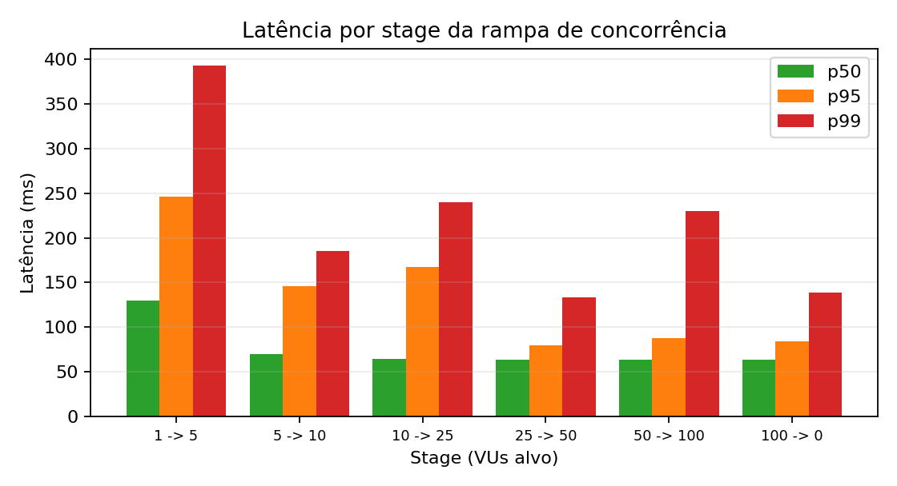
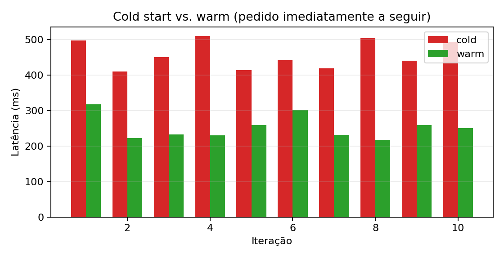

Geração serverless de números primos e análise experimental de latência e cold start
Implementação real numa plataforma de nuvem, com deployment, validação e medição de desempenho.
Função que recebe n e devolve a lista de primos inferiores.
Publicar como endpoint HTTP em produção.
Latência sequencial, concorrente e cold start.
A plataforma instancia tantas cópias quantas as necessárias e remove-as quando a procura cai.
Cobrança ao milissegundo. Picos e funções pouco usadas são proporcionais; sem máquinas semipreenchidas.
Cada invocação é independente. O estado vive numa base de dados ou cache externa.
Quando não há instância pronta, a plataforma tem de a provisionar antes de executar — primeiro pedido paga esse custo.
npx supabase.Worker já provisionado. Resposta dominada pelo round-trip de rede até à edge.
Sem worker pronto. Plataforma carrega código e inicializa runtime antes de servir.
// Crivo de Eratóstenes: O(n log log n) function primesUpTo(n: number): number[] { if (n < 2) return []; const sieve = new Uint8Array(n + 1); const primes: number[] = []; for (let i = 2; i <= n; i++) { if (!sieve[i]) { primes.push(i); for (let j = i*i; j <= n; j += i) sieve[j] = 1; } } return primes; }
Uint8Array em vez de boolean[]: 1 byte por posição, memória contígua, otimizado pelo motor JavaScript.
local · · · · · · · · · · · · · · · · · · · produção
Sem configuração extra, a primeira invocação devolveria 401 UNAUTHORIZED_NO_AUTH_HEADER. Ajustámos config.toml:
[functions.primes] verify_jwt = false entrypoint = "./functions/primes/index.ts"
POST /functions/v1/primes Host: uuvyutktcuhpwlltquii.supabase.co apikey: sb_publishable_*** Content-Type: application/json { "number": 10 }
200 OK Content-Type: application/json { "primes": [2, 3, 5, 7] }
Validação em dois passos: primeiro contra hello-world (controlo), depois contra primes. Estratégia que isola problemas de configuração de problemas no código.
Pedidos reais contra a função em produção. Cada latência gravada em ficheiro.
Script Python lê os ficheiros, calcula percentis e gera gráficos.
↑ Esta separação permite repetir a análise sobre os mesmos dados sem refazer a campanha de testes.
Cada pedido espera o anterior. Mede o melhor caso possível — sem fila, dominado pelo round-trip até à edge.
Observação: o valor máximo registado foi 1843 ms — quase com certeza o primeiro pedido do teste, executado contra um worker frio. Daí surgiu naturalmente o estudo do cold start.

O pedido típico mantém-se em ~64 ms mesmo com 100 utilizadores em paralelo.
p95 = 113 ms — apenas 5% dos pedidos passa este valor. A degradação concentra-se na cauda.
↑ Confirma a tese do modelo serverless: a plataforma aprovisiona capacidade sob procura e amortiza-a enquanto há tráfego.
k6 não serve aqui — mantém ligações TCP/TLS persistentes que impedem o worker de ser reciclado.

Latência dominada pela rede até à edge. A função em si é negligível.
Escalou de forma plana. Apenas 0.5% dos pedidos apanhou rate limiting do plano free.
Cold start várias vezes superior ao warm em todas as 10 iterações — o trade-off central do modelo.
A plataforma cumpre a promessa do modelo serverless em regime estacionário, mas o utilizador paga a elasticidade no primeiro pedido após inatividade.
Perguntas?